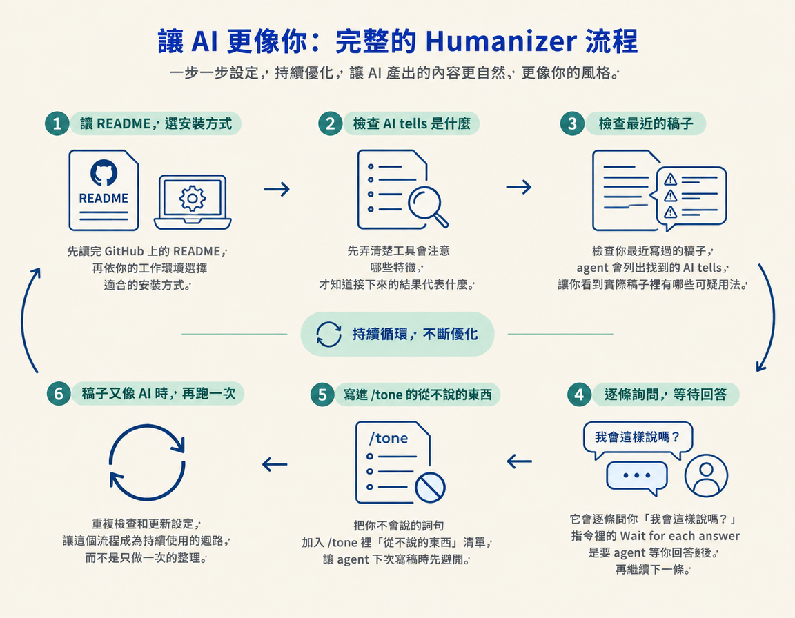

你會用 humanizer 找出稿子裡像 AI 寫的痕跡，再一條條判斷「我會這樣說嗎？」把你不會說的詞句加進 /tone 禁用清單。之後稿子又有 AI 味，就重跑這個迴路。
這一步接在建立 /tone 之後：你已經有一份描述自己語氣的設定，現在要拿近期寫好的稿子當輸入，找出不符合你說話習慣的地方，再把判斷結果寫回 /tone。做完後，你會得到一份更貼近自己語氣的設定，以及一套可以持續重跑的檢查流程。
你的 /tone 可能是從自己的對話整理出來的，也可能混進了你欣賞的風格。它有幫助，但不代表稿子從此不會漏出 AI 味。實際寫稿時，你還是可能看到一兩個字或句型，讓你皺眉：「這句不太像我會說的。」
AI 味有很多種，而且流行的用語也會變。只靠感覺檢查，很難一次抓乾淨。這時就讓一個專門的工具先標出可疑之處，再由你逐條判斷。不合你習慣的詞句，就加進 /tone，讓它下次寫稿時避開。這就是這個迴路要做的事。
/tone，因為最後要把你的判斷寫回去。Humanizer 是放在 GitHub 上的開源資源（github.com/blader/humanizer），也是課程講師特別推薦的工具。它會檢查文字裡像 AI 寫作的特徵，這類特徵在課程中稱為 AI tells，也就是能讓人察覺「這段可能是 AI 寫的」的用詞或寫法。
它的判斷依據來自維基百科的「Signs of AI writing」條目。這是一份持續更新、整理 AI 生成文字典型特徵的清單。講師指出，隨著清單更新，當下常見的 AI 用語和粗糙寫法也會跟著被整理或刪除。也就是說，humanizer 的檢查依據會隨清單變化，而不是只靠一套固定規則。
課程提供的 prompt 包含安裝、檢查、逐條詢問，以及更新 /tone 的完整流程。把下面這段直接貼給 agent：
"""Install the humanizer skill from github.com/blader/humanizer and use it to refine my /tone skill. Read its README first and pick the install that fits our setup. 1. Tell me in 3 or 4 plain lines what it checks for. 2. Run it over a few things you've written for me lately (or my last few scripts), and list the AI tells it finds. 3. Ask me about them one at a time: would I ever say this? Wait for each answer. 4. Add the ones I'd never say to /tone as things I never say, so you stop writing them in the first place. 5. Whenever a draft still sounds like AI later, run the humanizer again and update /tone the same way."""
這段指令會依序帶你完成以下動作：
Wait for each answer 是要 agent 等你回答後，再繼續下一條。/tone 裡「從不說的東西」清單，讓 agent 下次寫稿時先避開。
Humanizer 的工作是找出候選項，不是替你決定哪些說法該留下。最後的判斷權在你手上。逐條問自己一句話就好：我會這樣說嗎？
回答只有兩種，兩種都能幫你校準 /tone：
| 你的回答 | 接著做什麼 |
|---|---|
| 會，這就是我的說法 | 保留。這個用法可能只是被工具誤標。 |
| 不會，我不可能這樣講 | 加進 /tone 的「從不說的東西」清單。 |
如果你只在眼前這篇稿子裡刪掉不喜歡的詞，它下次仍可能出現。把它寫進 /tone，才會成為後續寫稿時可參照的規則。簡單說，當下刪掉只是在修這一篇，更新設定才能讓同一個問題不再反覆出現。
Prompt 的第 5 條說明了後續怎麼做：如果某篇稿子又聽起來像 AI，就再跑一次 humanizer，並用相同方式更新 /tone。
每次更新後，禁用清單都會更貼近你的習慣。這有點像除草：整理一次不代表之後不會再長，但每次看到不合適的用法就處理、記下來，下一次就更容易避開。講師也指出，持續調整這個 skill，最後它會更了解你怎麼說話、常用哪些字。
Humanizer 是一份開源工具，檢查依據來自持續更新的維基百科「Signs of AI writing」條目。把課程提供的 prompt 貼給 agent，它會先讀 README、選擇安裝方式，再檢查你近期的稿子並列出 AI tells。接著由你逐條回答「我會這樣說嗎？」。不會說的用法就加入 /tone 的「從不說的東西」清單。之後稿子又像 AI 時，再重跑一次並更新設定。
做完後，你會有一份經過實際稿件校準的 /tone，也知道怎麼持續檢查和更新它。到這裡，/hooks 負責開頭，/tone 負責整段文字的聲音，humanizer 則幫你找出不合語氣的痕跡。下一步會把這些工具接起來，走一次完整流程，將一個點子變成你會照著念的腳本。